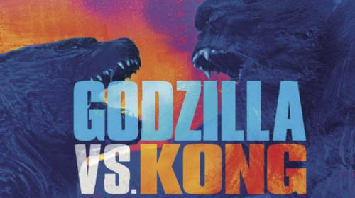

Godzilla vs. Kong é um filme que prometeu algumas coisas e cumpriu apenas o básico. Tem tudo para ser considerado um bom filme, mas não o bastante para ser lembrado como um clássico. A história em si não foi bem explicada, pois o filme indiretamente deixa muitas perguntas em sua cabeça, porém explica quase nada ou nada mesmo. Ele te força a criar uma lógica para com que as ações mostradas façam sentido, o roteiro apenas quis mostrar ou fazer algo, agora o “porque?” e o “como?” parece não se importar. Um exemplo sem spoiler é a simples pergunta, porque Godzilla foi atrás do Kong? E porque só agora? Se você conseguir responder isso, foi porque você forçou uma lógica, já que o filme não responde essas perguntas.
Na parte dos monstros/kaijus o ponto mais positivos que existe são os efeitos especias, a montagem e a direção nas lutas (Algumas partes são forçadas).Um ponto de vista mais pessoal, me pareceu muito que ouve sim uma forçação de barra para a parte do Godzilla, ficando mais forte, mais ágil e mais registável. A meu ver, fizeram isso só porque o mercado asiático é o mais bombado.
- Na parte do Godzilla, mostra uma base da lógica do porque ele começou a atacar as “pessoas”, mas o como ele consegue saber do plano dos humanos, não foi explicado. O porque ele parou de atacar os humanos para ir atrás do Kong, também não foi explicado.
- Na parte do Kong, mostra o ele sendo usado de uma maneira tão fácil, como conseguem prender ele? Porque ele se deixa ser levado? Como ele sabia onde tinha que ir e o que tinha que fazer? Como já de costume, não foi bem explicado.
Na parte dos humanos, até é tentado fazer algo como o que aconteceu em KONG: Ilha da Caveira, os humanos até parecem ter importância, e alguns realmente tem, mas a maior é descartável.
- Nos humanos que “acompanham” o Godzilla, ouve mais uma forçação, pelo fato de dois adolescentes e um teórico da conspiração terem mais importância que a própria agência do segundo filme do Godzilla. Como esse grupo consegue se locomover com facilidade no ambiente que são colocados? Eles servem como ponto de vista contando os segredos do filme, mas o roteiro faz isso de uma forma preguiçosa.
- Nos humanos do Kong, são mais aproveitados e tem mais sentido suas presenças. Apesar de alguém não conseguirem cumprir seu papel e outros que deveriam ter uma importância são irrelevantes. Mas conseguem ser mais carismáticos e uteis quando precisam, de uma maneira bem mais trabalhada.
O filme contem uma surpresa também, tem sua utilidade, é bem encaixada, mas a reviravolta não é bem explicada. E os humanos envolvidos são decepcionantes
Visite o site do RottenTomatoes para uma melhor avaliação.